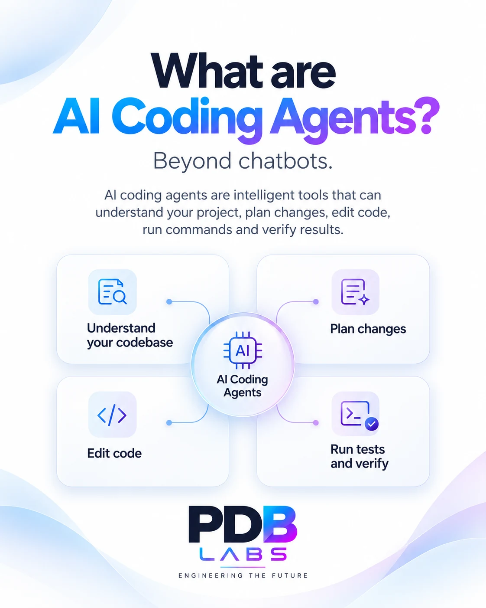

PDB LABS / INSIGHTS
Engineering ideas,
explained simply.
Visual guides on artificial intelligence, software engineering and emerging technologies. Explore each topic through clear explanations and visual concepts.
Featured guide
Artificial Intelligence · Software Engineering
PDB LABS · VISUAL GUIDE
What Are
AI Coding Agents?
Beyond chatbots.Discover the logic behind AI coding agents: how they understand goals, analyze context, plan actions, verify outcomes and iterate — regardless of programming language.
Explore the 5-step guide ↗